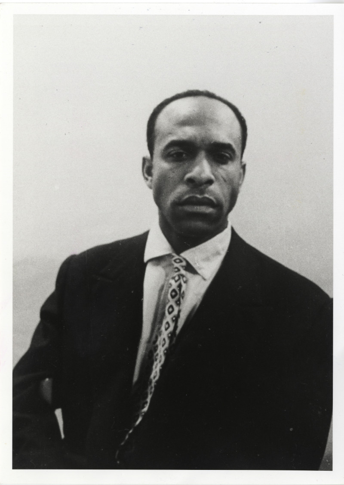
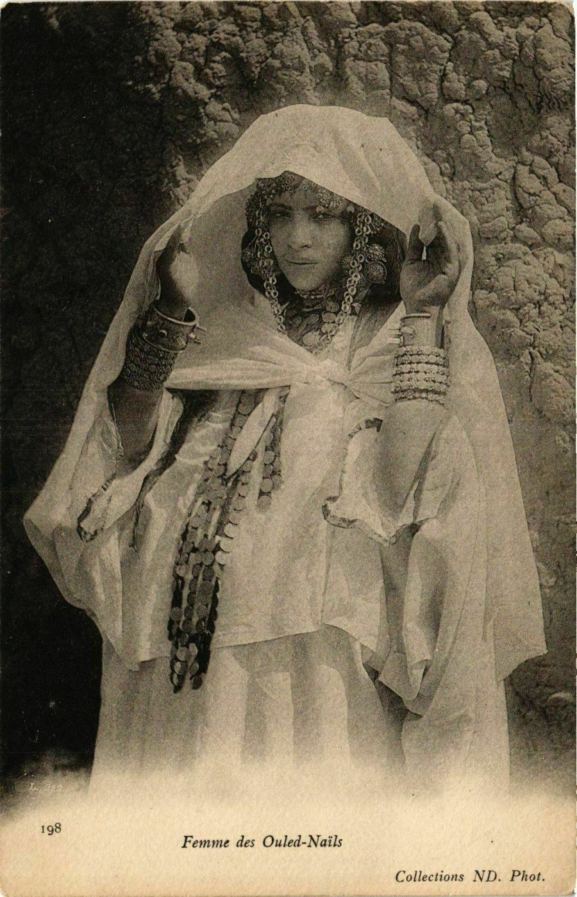
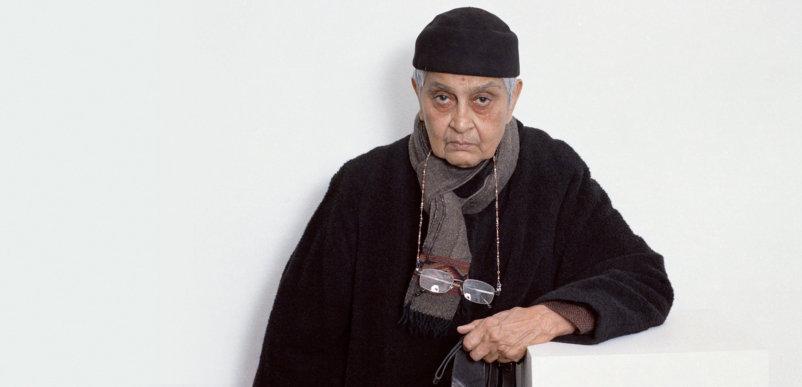
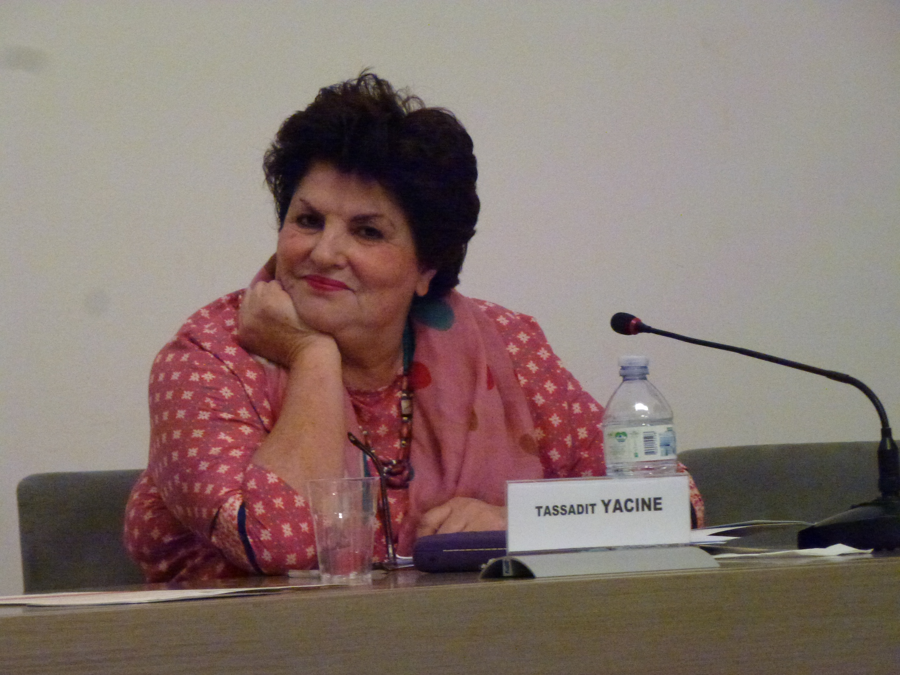
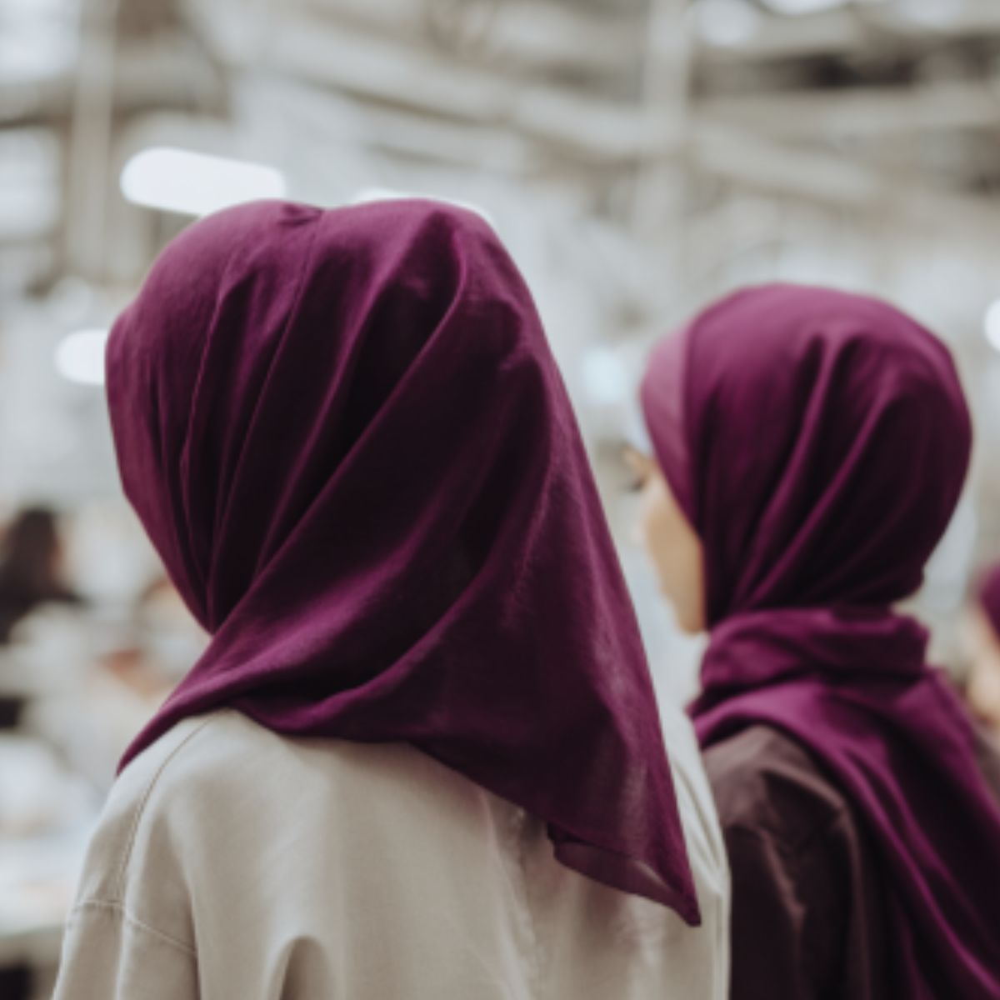

Pourquoi la France coloniale s’acharne-t-elle sur le voile des Algériennes ?
Si nous voulons frapper la société algérienne dans sa contexture, dans ses facultés de résistance, il nous faut d’abord conquérir les femmes ; il faut que nous allions les chercher derrière le voile où elles se dissimulent et dans les maisons où l’homme les cache.
Frantz Fanon · L’Algérie se dévoile · in L’An V de la révolution algérienne · 1959

Le corps féminin devient un front.
L’armée se dote de services d’action psychologique — les 5e bureaux — pour gagner « les cœurs et les esprits ». Gagner un peuple commence par gagner ses femmes : les sortir de la maison, les dévoiler, les inscrire dans des ouvroirs et des écoles ménagères.
De l’objet de fantasme de la carte postale, il passe à l’objectif de guerre, pensé et organisé comme tel.

Un harem monté de toutes pièces.
Décor loué, bijoux loués, pose imposée. Le corps qu’on interdit à cette femme de montrer, le colon le collecte : photographié, tiré en série, posté vers la métropole. Le « harem » de la carte postale est un plateau de studio dressé à Alger.
Une « double violation » : dévoiler ce que la société soustrayait au regard, puis en faire une marchandise qu’on expédie.Malek Alloula · Le Harem colonial · 1981
Dans Sociologie de l’Algérie (PUF, 1958), Bourdieu décrit deux principes qui organisent la vie algérienne : l’honneur, et l’inviolabilité de ce qui est sacré et privé. Une femme protégée du regard extérieur, c’est une société qui tient ses frontières. Dans cet édifice, le corps féminin est le point le plus sensible, et le colonisateur l’avait parfaitement compris.
Mai 1958 · dévoiler en public.
À l’offensive colonialiste autour du voile, le colonisé oppose le culte du voile.

Le voile retourné.
Elles commandent le vêtement dans les deux sens. Sous le haïk, « au-dessus de tout soupçon », elles font passer messages, argent, armes. Dévoilées et vêtues à l’européenne, elles franchissent les barrages de la ville coloniale.
Elles n’ont pas attendu qu’on les libère.
Marnia Lazreg met en garde contre le confort de deux portraits. Aucun ne dit ce que les Algériennes ont fait.
La France fait du dévoilement une preuve de ralliement. Dénuder la femme, c’est afficher sa victoire sur la société.
Le discours nationaliste célèbre le haïk comme gardien de l’authenticité. Ce sont elles qui, les premières, en avaient fait un signe de refus.
Elles ont choisi leurs rôles, organisé leurs réseaux, décidé de porter le voile ou de l’ôter selon ce que la lutte exigeait. C’est cet espace-là que l’histoire officielle a le plus de mal à écrire.

La subalterne peut-elle parler ? Non qu’elle soit muette. Mais chaque fois qu’elle ouvre la bouche, un pouvoir se tient déjà là pour traduire, récupérer ou couvrir ce qu’elle dit.
Les dominées aussi ont pensé — par l’oral.
Privées de l’école et de l’écrit, des générations de femmes ont fait du chant et de la poésie orale un lieu de pensée et de résistance symbolique.
L’anthropologue Tassadit Yacine y lit une « ruse des dominés » : contourner l’interdit par la voix. Le terrain est kabyle ; le mécanisme vaut pour toutes celles que l’écrit a tenues à l’écart.

Militante à dix-sept ans sous le nom de Djamila, elle est la première à établir leur nombre et leurs rôles. Les poseuses de bombes sont une minorité célèbre ; l’immense majorité a mené le travail obscur des liaisons, sans lequel aucun maquis n’aurait tenu.
En France, le voile est resté un objet de loi, de stigmatisation et d’obsession. Autre contexte que celui de la colonisation ; une même problématique demeure.
Jusqu’où le corps des femmes est-il un terrain sur lequel il revient à d’autres de légiférer ?

Une doctrine qui vise la femme pour défaire la société, et un voile qu’elle retourne en arme.
La carte postale
L’image qu’on fabrique. Dévoiler en studio ce que la société soustrayait au regard. Alloula, 1981.
La cérémonie de 1958
L’acte qu’on impose. Le dévoilement mis en scène au Forum d’Alger. Fanon, 1959.
Le maquis
Le retournement. Elles font du voile imposé un instrument de la lutte. 30 sept 1956.